Prendre ses mesures
Le formulaire est prérempli à partir du tableau des tailles ci-dessous : les mesures principales y figurent, les autres en sont déduites.
| Taille | Tour de poitrine | Tour de taille | Longueur devant taille | Épaule-poignet |
|---|---|---|---|---|
| 44 | 88 | 76 | 44,5 | 62 |
| 46 | 92 | 80 | 45 | 62 |
| 48 | 96 | 84 | 45,5 | 62,5 |
| 50 | 100 | 88 | 46 | 63 |
| 52 | 104 | 92 | 46,5 | 63,5 |
| 54 | 108 | 98 | 47 | 64 |
| 56 | 112 | 104 | 47,5 | 64 |
| 58 | 116 | 110 | 48 | 64,5 |
| 60 | 120 | 116 | 48,5 | 65 |
| 62 | 124 | 122 | 49 | 65,5 |
Stature moyenne. Pour les statures petite et grande, seules les longueurs changent. Les numéros de taille sont les numéros français ; les mesures suivent la grille de la norme européenne des tailles de vêtements.
Ces tailles standard décrivent une silhouette moyenne, et peu de personnes y correspondent exactement. Vous pouvez donc corriger chacune des mesures : plus vous en corrigez, plus la veste sera sur mesure.
Il vous faut un mètre ruban, si possible l’aide d’une autre personne, et environ 10 minutes. Les mesures marquées « à vérifier » sont les plus importantes.
Pour les hommes
Onze mesures suffisent. Prenez-les sur vous ou sur la personne concernée, en sous-vêtements ou avec des vêtements très fins, le mètre ruban à plat contre le corps, sans serrer.
À vérifier en priorité : tour de poitrine, tour de taille, longueur devant taille, épaule-poignet.
Le formulaire est prérempli à partir du tableau des tailles ci-dessous : les mesures principales y figurent, les autres en sont déduites.
| Taille | Tour de poitrine | Tour de taille | Tour de bassin | Longueur devant taille |
|---|---|---|---|---|
| 34 | 80 | 64 | 88 | 38 |
| 36 | 84 | 68 | 92 | 39 |
| 38 | 88 | 72 | 96 | 39,5 |
| 40 | 92 | 76 | 100 | 40 |
| 42 | 96 | 80 | 104 | 40,5 |
| 44 | 100 | 84 | 108 | 41 |
| 46 | 104 | 88 | 112 | 42 |
| 48 | 110 | 94 | 117 | 42,5 |
| 50 | 116 | 100 | 122 | 43,5 |
| 52 | 122 | 106 | 127 | 44,5 |
Stature moyenne. Pour les statures petite et grande, seules les longueurs changent. Les numéros de taille sont les numéros français ; les mesures suivent la grille de la norme européenne des tailles de vêtements.
Ces tailles standard décrivent une silhouette moyenne, et peu de personnes y correspondent exactement. Vous pouvez donc corriger chacune des mesures : plus vous en corrigez, plus la veste sera sur mesure.
Il vous faut un mètre ruban, si possible l’aide d’une autre personne, et environ 10 minutes. Les mesures marquées « à vérifier » sont les plus importantes.
Pour les femmes
Dix-sept mesures permettent d’ajuster la veste à votre morphologie. Prenez-les sur vous ou sur la personne concernée, en sous-vêtements ou avec des vêtements très fins, le mètre ruban à plat contre le corps, sans serrer. Pour les mesures de poitrine, portez le soutien-gorge que vous mettrez sous la veste.
À vérifier en priorité : tour de poitrine haut, tour de taille, tour de bassin, longueur devant taille.
Comment prendre vos mesures


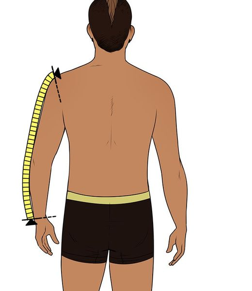

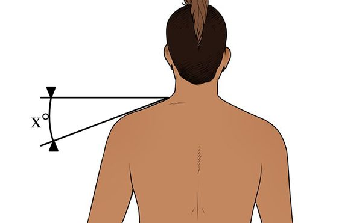
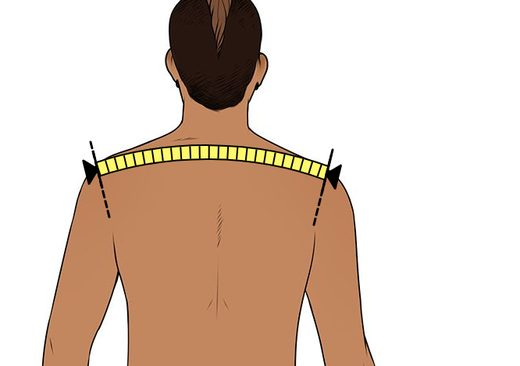
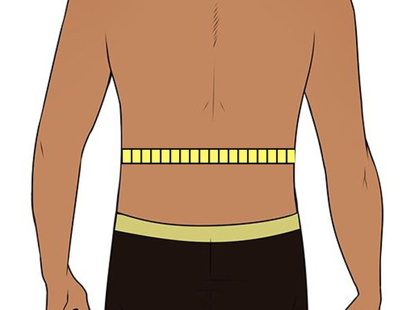
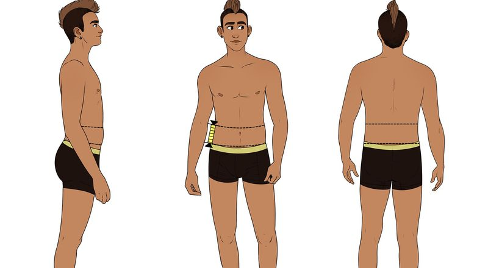
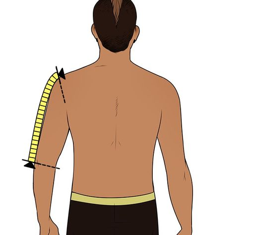
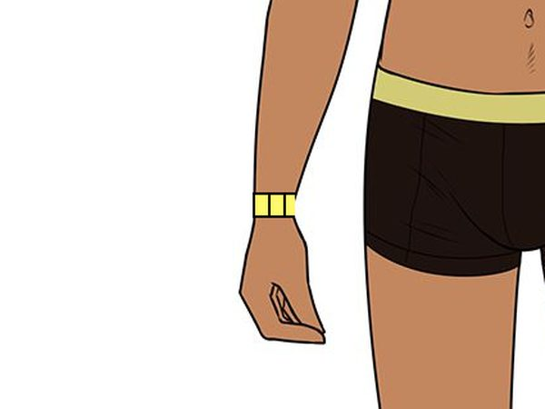
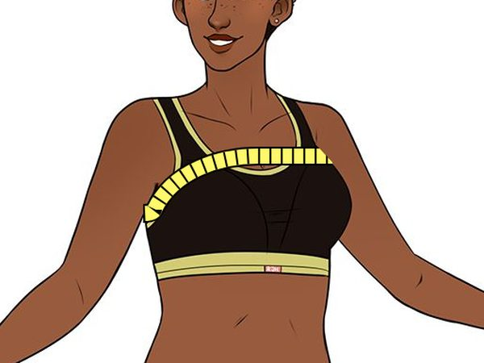


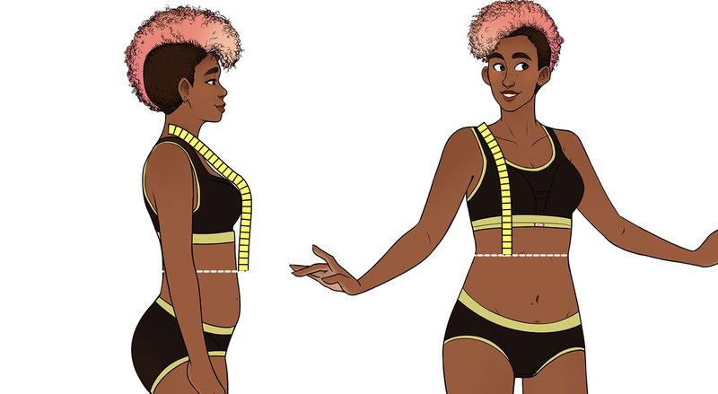
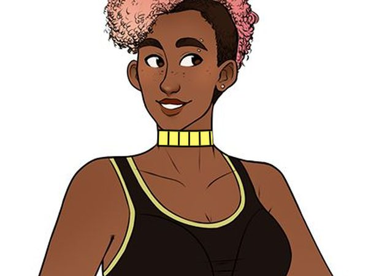
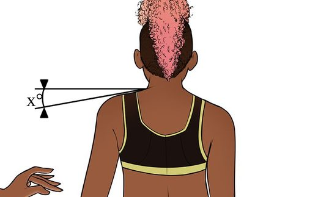


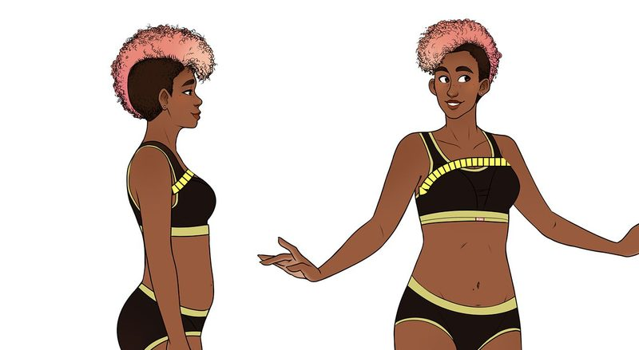

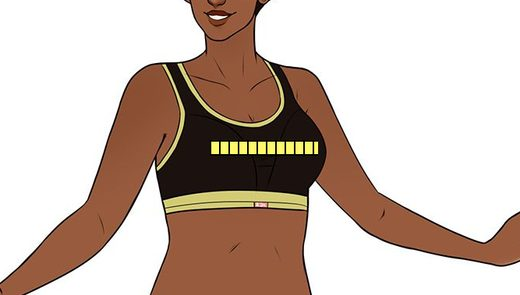


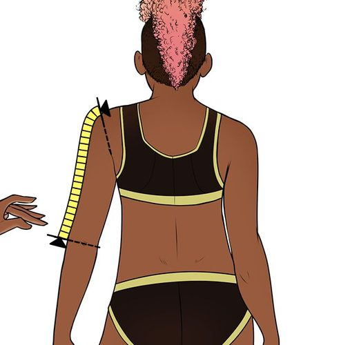
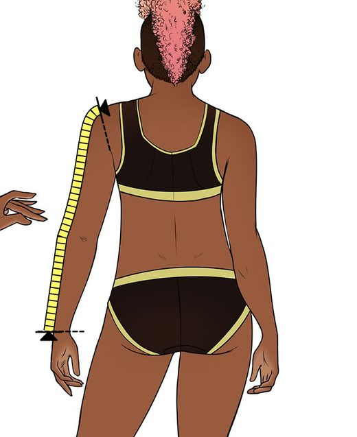

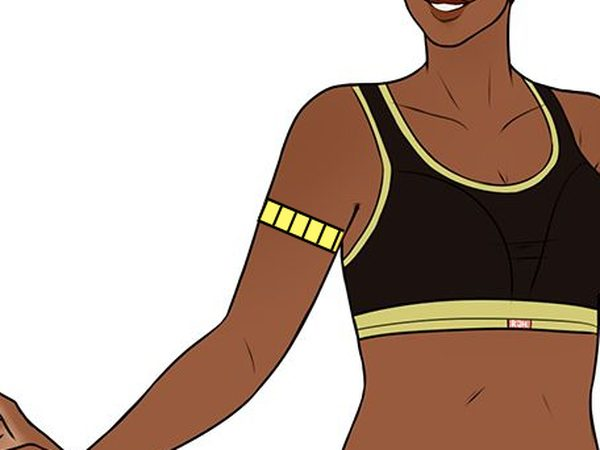
Quelqu’un coud pour vous ?
Prenez vos mesures avec ce guide, saisissez-les sur la page du patron, puis cliquez sur « Partager ». La personne qui coud recevra un lien qui ouvre le patron déjà réglé à vos mesures. Le lien ne passe par aucun serveur : vos mesures ne sont envoyées qu’à elle.